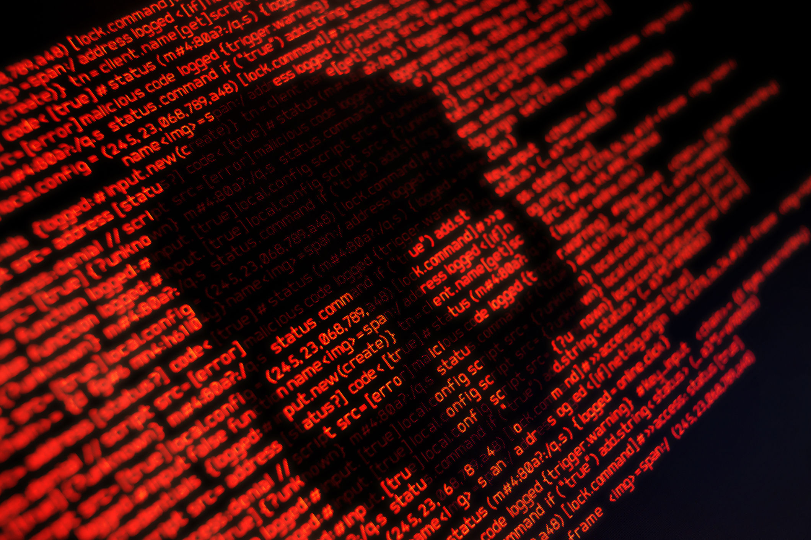

¿Qué es un virus informático?
Un virus informático es un programa o fragmento de código diseñado para provocar daños en un equipo corrompiendo archivos del sistema, despilfarrando recursos, destruyendo datos o alterando el funcionamiento normal de otra forma.
Los virus se diferencian de otros tipos de malware en que se replican automáticamente, es decir, son capaces de copiarse de un archivo o un PC a otro sin el consentimiento del usuario.
Virus, malware, troyanos... ¿cuál es la diferencia?
No todo el software que ataca un PC es un virus. Los virus informáticos son solo una de tantas clases de malware (malicious software, software malicioso). A continuación, describimos otras clases muy comunes también:
-
Troyanos:igual que el viejo caballo de madera infestado de atacantes del que toma su nombre, este malware simula ser software legítimo inocuo o se introduce en él a fin de engañar al usuario para abrir la puerta a otros tipos de malware que infectan el PC.
-
Spyware:con ejemplos como los registradores de pulsaciones, este tipo de malware tiene el objeto de espiar a los usuarios, guardar sus contraseñas, datos de tarjetas de crédito, otros datos personales y patrones de comportamiento en línea para después enviarlo todo al artífice que lo programó.
-
Gusanos:este tipo de malware ataca redes enteras de dispositivos saltando de un PC a otro.
-
Ramsomware:esta variedad de malware secuestra archivos (y, a veces, el disco duro entero), los cifra y exige dinero a la víctima a cambio de una clave de descifrado (que puede funcionar o no, pero lo más probable es que no).